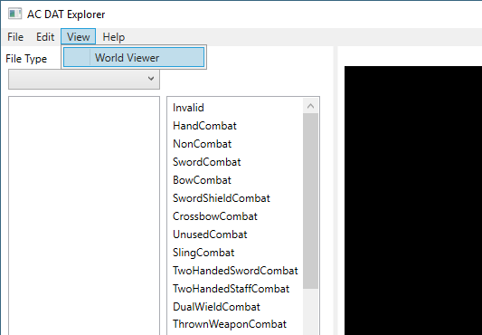

Navigate to the ACViewer/bin/x64/Debug/ folder, and double-click the ACViewer.exe file to launch ACViewer.
The first step is to load the AC folder into the application. In the menu bar at the top of the window, go to File > Open and browse to the folder that contains the AC .DAT files. Select any DAT to load the folder (can take a few seconds)
On the left side of the window, there is a 'File Type' dropdown selector. This list contains all of the known file types within the DAT files that can be displayed:
For a description of these file types, Optimshi has created an excellent website http://ac.yotesfan.com/ that gives an overview of what all of these files are.
0xFFFF - Landblock - These are file IDs within the client_cell.dat that end with 0xFFFF. The world map contains 254x254 landblocks, and clicking on landblock will also bring up a world map in the viewer on the right side.
0xFFFE - LandblockInfo - Contains additional info about the landblocks, such as how many buildings they contain, and how many indoor EnvCells are contained within the landblock (for dungeons and interiors).
0x100 - EnvCell - These are dungeon and interior cells for each landblock. Clicking on an individual EnvCell will display it in the viewer.
0x01 - GfxObj - Graphics Objects are individual pieces of the 3D models. Some things like buildings that don't have any moving parts are just 1 large graphics object, but for moving creatures such as players and monsters, they are composed of multiple graphics object parts, that are linked together in the next file type. Clicking these files will show them in a model viewer.
0x02 - Setup - An object that contains multiple GfxObj parts, usually with an associated animation table sent by the server. Clicking on a setup will show the assembled / animated model in the viewer, along with a list of all its animations available. Clicking on the animations to the right will show those in the viewer.
0x03 - Animation - These are raw animations describing how an object changes over time. These raw lists of animations need to be linked up to a model to be displayed, which is usually done through a MotionTable sent by the server.
0x04 - Palette - For textures which use indexed colors, these are all of the palettes in the game, and the individual colors they contain. Clicking on a palette ID from the list will show it in the image viewer.
0x05 - SurfaceTexture - Each texture in the game can be displayed at multiple resolutions, ie. textures in the foreground will be displayed at max resolution, and distance textures will be displayed at half resolution (mipmaps). A SurfaceTexture has the different resolutions for each texture.
0x06 - Texture - An individual image file. Clicking on these will display them in the image viewer.
0x08 - Surface - Surfaces have a lot of additional info for a texture, such as if a clipmap, translucency, luminosity, and diffuse values.
0x09 - MotionTable - A motion table links up objects to animations. It describes all of the motions an object can perform, and translates them to the raw animations. It also defines cycles, and which motions can link to other motions (ie. bow combat can perform the reload animation, but other combat stances might not have a reload motion).
0x0A - Sounds - All of the sound effects in the game. Click on a sound to hear it!
0x0D - Environment - each EnvCell in the cell.dat links to 1 Environment, which contains the vertices and polygons. The EnvCell contains the textures, so 1 environment can be textured differently. Clicking on an environment will show a wireframe view
0xE000002 - CharGen - Contains information for character creation, templates, starter stats, starting towns and locations
0XE00001A - BadData - Contains a list of expired IDs for game objects (weenies).
0x0F - PaletteSet - A group of palettes w/ different shades. ie., this will define the indexed colors at different brightness.
0x10 - Clothing - Contains information about the appearance and color shades for various pieces of clothing.
0x11 - DegradeInfo - Contains information about the distances to switch to different rendering quality and detail textures for objects.
0x12 - Scene - The tables which describe the pseudo-randomized scenery (trees, bushes, rocks) that appear on the landscape.
0x13 - Region - One giant record that has a bunch of info describing the game world. Only 1 region was ever defined for AC (Dereth)
0x20 - SoundTable - A sound table maps audio cues (such as 'death') to sound files for an object. The server sent the SoundTable IDs for each object.
0x22 - Enums - Various lists of information defined in the dats, such as a mapping of character IDs -> character titles
0x23 - StringTable - A list of strings of text defined in the dat files. Most of the text was sent by the server, but also a bunch of client-side text stored in here.
0x25 - DIDs - Links to different data IDs, ie. UI layout, attribute icons, etc.
0x27 - Dual DIDs - Weenies and their W_Class values
0x30 - CombatTable - The combat maneuvers table describes which attacks a creature can perform, depending on its current stance / equipped items, along with the probabilities of performing special attacks.
0x32 - EmitterInfo - A particle emitter. Click to display the particle system animations.
0x33 - PhysicsScript - A script which can trigger different physical effects and actions in the game world.
0x34 - PhysicsScriptTable - A mapping of physics script cues (such as BreatheFlame) to the actual PhysicsScript, along with different intensities.
After selecting a file type, all files in the DAT matching that type will be displayed:
Selecting the individual files will display the raw data in a navigable tree view below:
To access the World Map, go to the 'View' menu at the top of the application, and click 'World Viewer':

The World Map can also be accessed by select '0xFFFF - Landblock' or '0xFFFE - LandblockInfo' from the FileType selector.
To zoom in and out of the world map, use the mouse scrollwheel.
To pan around the world map, click and drag with the RIGHT mouse button. The arrow keys can also be used.
There is a red square that appears on the mouse cursor. This square is the current landblock the mouse cursor is hovered over.
To view just 1 landblock, LEFT mouse click to bring up the 3D viewer for the current landblock highlighted by the red square.
To view a range of landblocks, click and drag the LEFT mouse button to select the range of landblocks you want to view.

A word of caution: viewing more than 1k landblocks at a time may consume significant RAM, and take awhile to load, so try to keep the selection to a reasonable range!
To fly around the world viewer, use the WASD keys to move the camera around. To rotate the camera, click and hold the RIGHT mouse button in the world viewer area, and drag the mouse around.
To adjust the speed of the camera in the world viewer, use the mouse wheel.